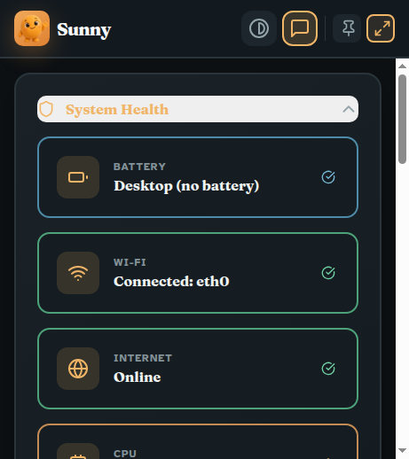
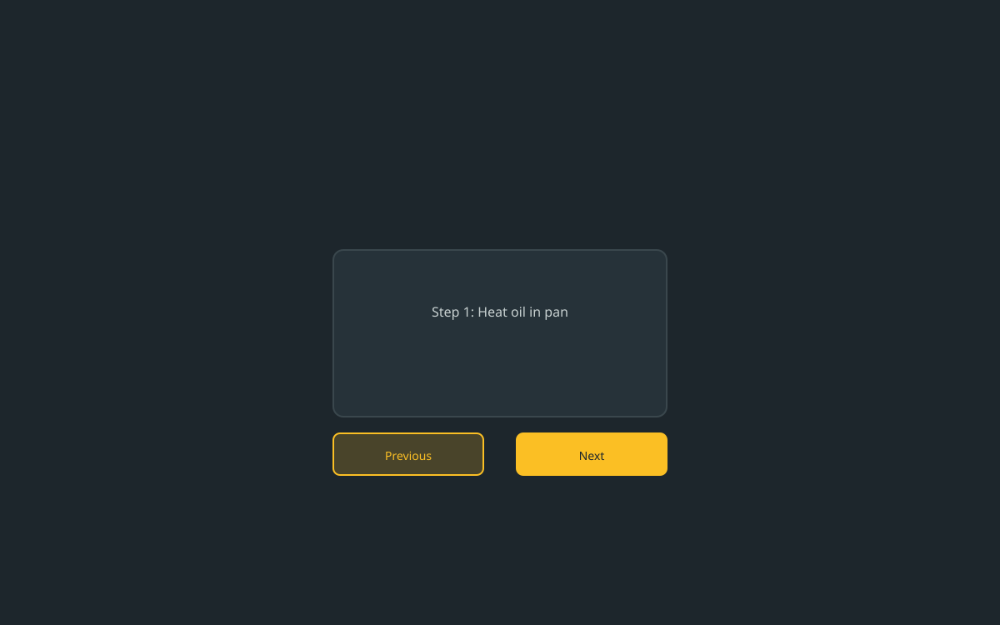
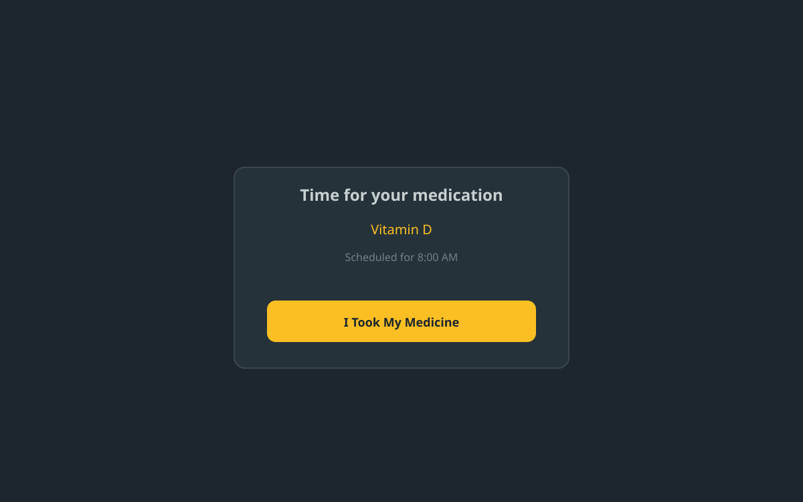
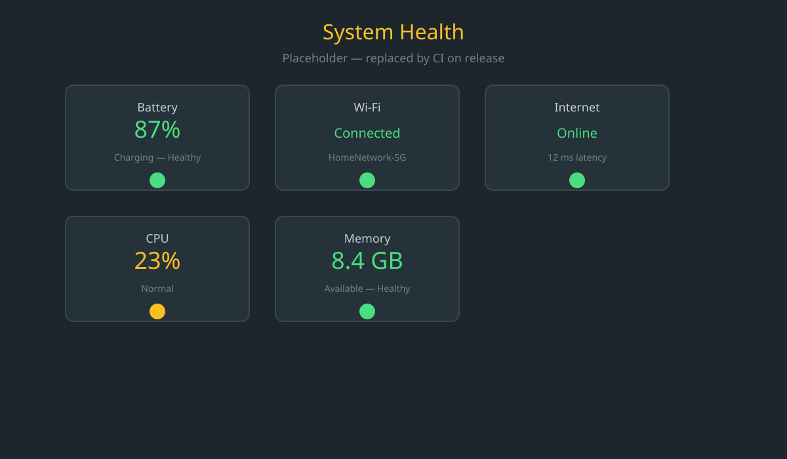

Voice input
Hold the button and talk. Sunny types what you said right into the box.
Sunny runs on your computer and helps with everyday tasks: computer questions, medication reminders, recipes, weather. Speak or type. Sunny listens and answers out loud.
Available for Windows, macOS, and Linux. Works on screens as small as a phone.

No accounts, no setup, no subscription. Once it is installed, Sunny works with no internet connection at all.
Hold the button and talk. Sunny types what you said right into the box.
Ask for a dish. Sunny finds the recipe and reads each step aloud while you cook.
Set a pill name and time. Sunny speaks up. Big button to mark it taken.
Ask "why is my internet slow?" or "how is my battery?" Sunny checks and tells you in plain English.
Weather and top headlines, read aloud.
Sunny asks before anything irreversible, and it screens what is on your screen for hidden instructions before the model ever sees it.

Three steps. No technical skills needed. Sunny runs entirely offline after install.
Downloads/Sunny-Setup.exeDownloads/Sunny-*.dmgsudo dpkg -i sunny_*_amd64.deb


Download Sunny from GitHub Releases and install it in two clicks.
View detailed setup guide (permissions, shortcuts, troubleshooting)Accessibility isn't an afterthought. It's the foundation.
Readable fonts. High contrast. One tap to make text bigger, up to 175%.
Every button at least 48x48 px. Labelled for screen readers.
Full text-to-speech. Easy mute switch.
Respects your system's reduce-motion setting.
Complete keyboard navigation. Visible focus ring.
No accounts. No ads. No tracking. Data stays on your computer.
Download. Speak or type. Get help.
Download Sunny from GitHub Releases. Double-click. No config, no sign-up.
Tap the mic and talk, or type in the box. Both work the same way.
Get a spoken answer, step-by-step help, a recipe, or a health check. Explained in plain, patient language.
No. Sunny is free and open source. No subscriptions. No ads. No hidden fees.
Internet helps Sunny fetch recipes, weather, and news. Basic help works without it.
No. Sunny refuses terminal commands, passwords, network scanning, or hacking. Every sensitive action asks permission first and defaults to No.
Windows, macOS, and Linux. Not sure? Start with the Windows download. It's the easiest.
Download Sunny free from GitHub Releases. Get a patient helper who never rushes you, never shouts, and is always happy to explain again.